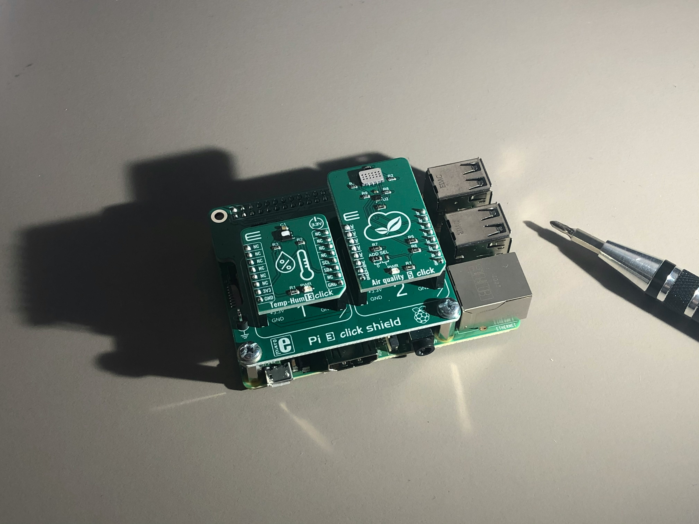
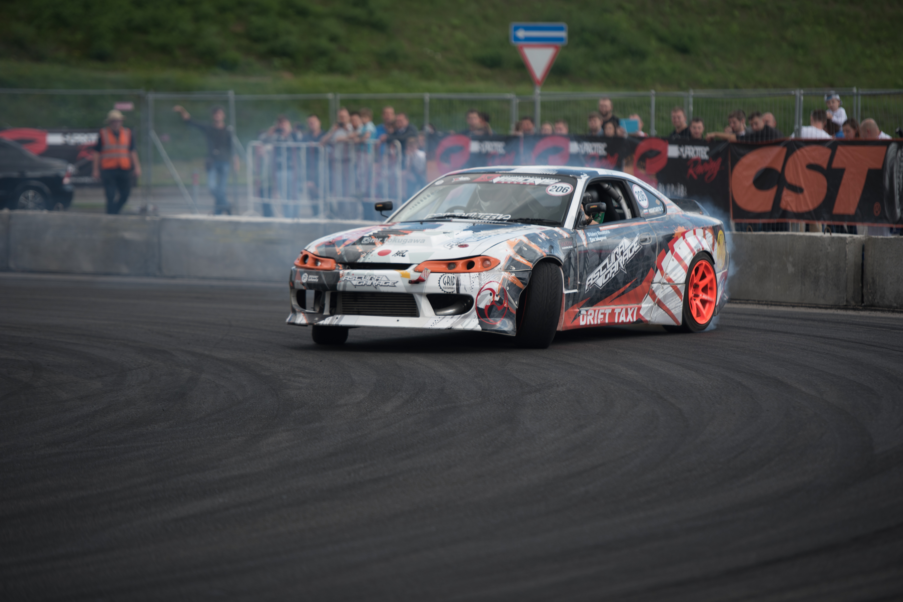
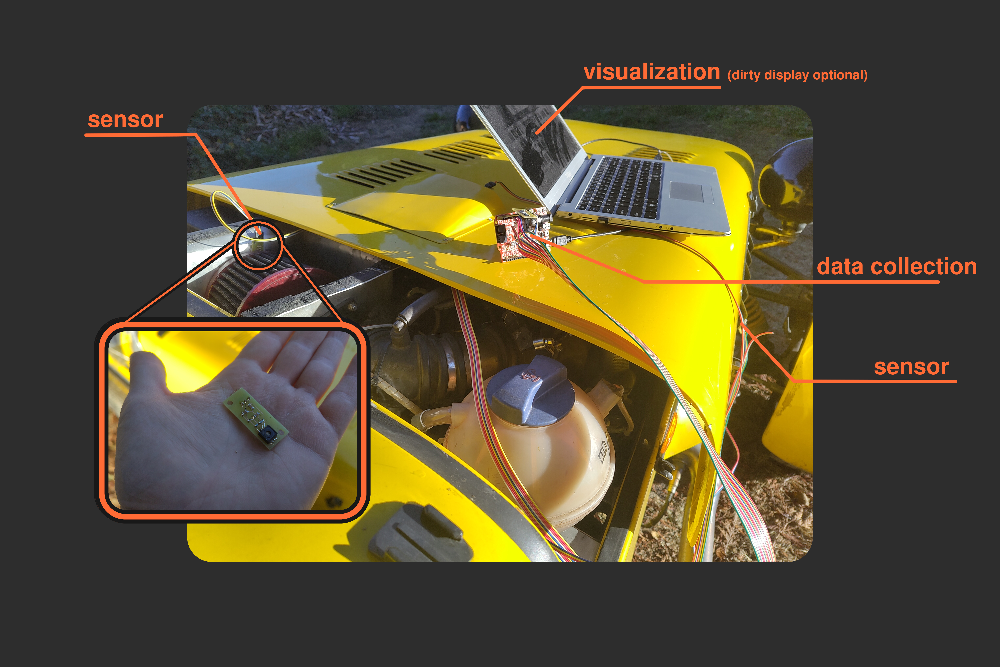
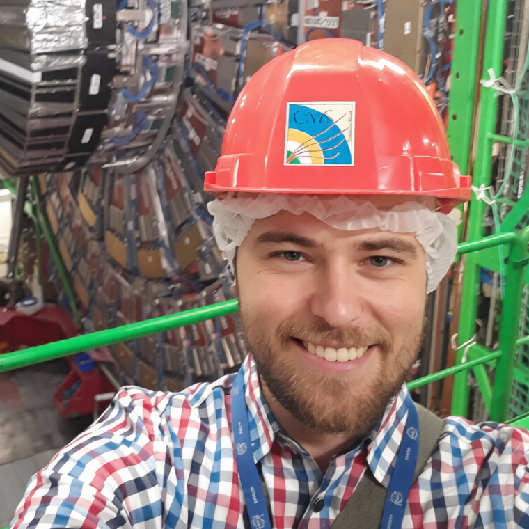

See exactly how air moves around and through your car in real conditions, not a lab.
Flux-T7 is hardware sensors and software that lets you see airflow around your car and inside the engine bay. It puts aerodynamics and cooling analysis in the hands of amateurs and semi-pro teams, not just the pros with wind tunnels.
Wondering how efficient your radiators are on the track, or how to cut drag and save fuel? Now you can measure it yourself: no wind tunnel, no tufts of cotton stuck to your fenders.


If you are an amateur tuning your ride, a semi-pro weighing the cost of a wind tunnel against slapping sensors on your car, or a pro team testing tweaks before committing to tunnel time, this is for you. And anybody who wants to understand airflow inside the engine bay, because no wind tunnel can show you that.
Here's what it can do:
Measuring absolute pressure at multiple points; understanding air pressure behavior during a drive on an actual track in actual weather. Are you wasting horsepower on pushing air?
Measuring temperature at multiple points. How much is your turbo heating up your intake air? Do the radiators do a good job? Don't guess, just measure them.
Sensors alone do not tell the full story. Connect to your ECU to track speed, throttle, and more so you know when and why airflow changes.
As an owner of a Lotus Seven replica, a car with the worst aerodynamic drag coefficient of all series production cars, I have always wondered if there was anything I could do about it. As a hobbyist, renting a wind tunnel or modeling the car in 3D with fluid dynamics software seemed out of reach. So I built custom hardware and software to understand pressure points. It was a fun idea!
The narrow front means I have got three radiators: water, oil, and intercooler. They are stacked one behind the other just to fit. They are practically on top of each other. But nobody has measured which one needs cooling the most, or which is starved for airflow. Even with the overlap, we can optimize their order: put the hottest radiator last so it does not heat up the others.
Now, with Flux-T7, we can finally see where air gets stuck, where it flows fast and how that affects cooling.

Right now, I am gathering feedback. I have built a working prototype that proves the concept, but turning it into a real product means understanding what you need. What would make this tool actually useful for you?

Just some guy. I have got a Master's in theoretical CS from the University of Copenhagen, worked at CERN, and spent years as a software engineer. But I am also a tinkerer, an engineering enthusiast, and, when I am not geeking out over airflow, a swing dancer. If it involves computers, from soldering circuits to cloud architecture, I have probably messed with it.
The prototype works, but I need your input to make it great. Whether it is a simple "I want it!" or a detailed "I work on X and need Y," drop me an email. Every bit helps.